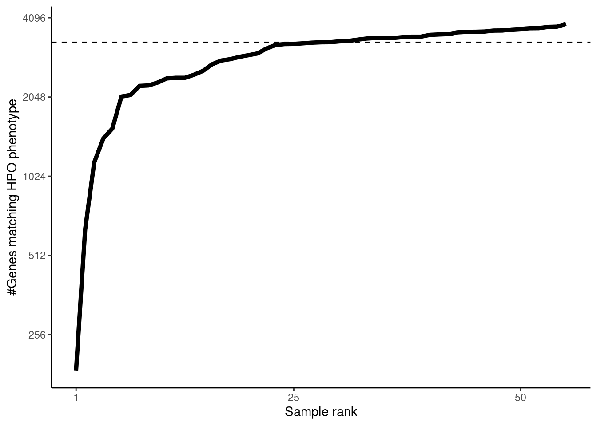

source(snakemake@input$config)
# READ ANNOTATION
#sa <- fread('/s/project/mitoMultiOmics/multiOMICs_integration/raw_data/proteomics_annotation.tsv')
sa <- fread(snakemake@input$sa)
sa <- sa[USE_FOR_PROTEOMICS_PAPER == T]
# Load patient's HPO
pat_hpo <- fread(snakemake@input$patient_hpo)
#pat_hpo <- fread('/s/project/mitoMultiOmics/multiOMICs_integration/raw_data/Patient_HPO_phenotypes.tsv')
pat_hpo <- pat_hpo[, c("SAMPLE_ID", "HPO_ID")]
pat_hpo <-pat_hpo[!duplicated(pat_hpo )]
# HPO mapping
# load HPO ontology
hpo <- get_ontology("http://purl.obolibrary.org/obo/hp.obo", extract_tags="everything")
# extract parent and chiled for a given term
hpo_names <- data.frame(HPO_ID = hpo$id, HPO_name = hpo$name, stringsAsFactors = F) #save names
# extract parents
parents <- ldply(hpo$parents, data.frame, stringsAsFactors = F)
colnames(parents) <- c("HPO_ID", "relative")
parents$relation <- "parent"
# extract children
children <- ldply(hpo$children, data.frame, stringsAsFactors = F)
colnames(children) <- c("HPO_ID", "relative")
children$relation <- "child"
# combine parents and children
hpo_df <- rbind(parents, children, stringsAsFactors = F)
hpo_df <- as.data.table(hpo_df[!duplicated(hpo_df ),])
index <- data.frame(HPO_ID = unique(hpo_names$HPO_ID), relative = unique(hpo_names$HPO_ID), stringsAsFactors = F)
index$relation <- "index"
#combine into one df
hpo_df <- rbind(hpo_df, index)
hpo_df <-hpo_df[!duplicated(hpo_df ),]
#hpo_df <- merge(hpo_df, hpo_names, by = "HPO_ID")
hpo_df <- hpo_df [HPO_ID %in% unique(pat_hpo$HPO_ID)]
#hpo_df <- hpo_df[relation != "parent"]
#load gene - hpo
hpo_gene <- fread("http://compbio.charite.de/jenkins/job/hpo.annotations/lastSuccessfulBuild/artifact/util/annotation/phenotype_to_genes.txt")
colnames(hpo_gene) <- c("HPO_ID", "HPO_name", "entrezID", "geneID", "Additional_Info", "source", "disease-ID")
hpo_gene <- hpo_gene[, c("HPO_ID","geneID")]
hpo_gene <- hpo_gene[!duplicated(hpo_gene)]
# Annotate relatives by gene
hpo_df <- merge(hpo_df, hpo_gene, by.x= "relative", by.y = "HPO_ID")
# Consider genes matched to relatives - matched to index
hpo_df$relative <- NULL
hpo_df$relation <- NULL
hpo_df <- hpo_df[!duplicated(hpo_df), ]
pat_hpo <- merge(pat_hpo, hpo_df, by = "HPO_ID", allow.cartesian=TRUE )
pat_hpo$HPO_ID <- NULL
pat_hpo <-pat_hpo[!duplicated(pat_hpo ),]
pat_hpo[ , HPO_match := T]
number of genes matching phenotype per sample
os <- pat_hpo[, .N, by= SAMPLE_ID]
os <- os[order(N),]
os$rank <- seq(1: nrow(os))
ggplot(os)+
geom_line( aes( x= rank, y = N), size=1.7)+
theme_classic()+
scale_y_continuous(trans='log2')+
scale_x_continuous(breaks= c(1, 25, 50, 75, 100, 130), limits=c(1, nrow(os)))+ #
geom_hline(yintercept = median(os$N), linetype = "dashed")+
xlab("Sample rank") +
ylab("#Genes matching HPO phenotype")

#write_tsv(pat_hpo, '/s/project/mitoMultiOmics/multiOMICs_integration/processed_data/HPO/Patients_HPO_Gene_mapping.tsv')
write_tsv(pat_hpo, snakemake@output$hpo_match)
IyctLS0KIycgdGl0bGU6IEhQTyBtYXRjaCBGcmVzYXJkIGV0IGFsIDIwMTkgIAojJyBhdXRob3I6IHNtaXJub3ZkCiMnIHdiOgojJyAgaW5wdXQ6CiMnICAtIGNvbmZpZzogJ3NyYy9jb25maWcuUicKIycgIC0gc2E6ICdgc20gY29uZmlnWyJBTk5PVEFUSU9OIl1gJwojJyAgLSBwYXRpZW50X2hwbzogJ2BzbSBjb25maWdbIlJBV19IUE8iXWAnCiMnICBvdXRwdXQ6CiMnICAtIGhwb19tYXRjaDogJ2BzbSBjb25maWdbIlBST0NfREFUQSJdICsgIi9IUE8vUGF0aWVudHNfSFBPX0dlbmVfbWFwcGluZy50c3YiYCcKIycgb3V0cHV0OgojJyAgIGh0bWxfZG9jdW1lbnQ6CiMnICAgIGNvZGVfZm9sZGluZzogaGlkZQojJyAgICBjb2RlX2Rvd25sb2FkOiBUUlVFCiMnLS0tCgoKc291cmNlKHNuYWtlbWFrZUBpbnB1dCRjb25maWcpCgoKIyBSRUFEIEFOTk9UQVRJT04KI3NhIDwtIGZyZWFkKCcvcy9wcm9qZWN0L21pdG9NdWx0aU9taWNzL211bHRpT01JQ3NfaW50ZWdyYXRpb24vcmF3X2RhdGEvcHJvdGVvbWljc19hbm5vdGF0aW9uLnRzdicpCnNhIDwtIGZyZWFkKHNuYWtlbWFrZUBpbnB1dCRzYSkKc2EgPC0gc2FbVVNFX0ZPUl9QUk9URU9NSUNTX1BBUEVSID09IFRdCgojIExvYWQgcGF0aWVudCdzIEhQTyAKcGF0X2hwbyA8LSBmcmVhZChzbmFrZW1ha2VAaW5wdXQkcGF0aWVudF9ocG8pCiNwYXRfaHBvIDwtIGZyZWFkKCcvcy9wcm9qZWN0L21pdG9NdWx0aU9taWNzL211bHRpT01JQ3NfaW50ZWdyYXRpb24vcmF3X2RhdGEvUGF0aWVudF9IUE9fcGhlbm90eXBlcy50c3YnKQoKcGF0X2hwbyA8LSBwYXRfaHBvWywgYygiU0FNUExFX0lEIiwgIkhQT19JRCIpXQpwYXRfaHBvIDwtcGF0X2hwb1shZHVwbGljYXRlZChwYXRfaHBvICldCgoKCgojIEhQTyBtYXBwaW5nCiMgbG9hZCBIUE8gb250b2xvZ3kKaHBvIDwtIGdldF9vbnRvbG9neSgiaHR0cDovL3B1cmwub2JvbGlicmFyeS5vcmcvb2JvL2hwLm9ibyIsIGV4dHJhY3RfdGFncz0iZXZlcnl0aGluZyIpCgoKCgojIGV4dHJhY3QgcGFyZW50IGFuZCBjaGlsZWQgZm9yIGEgZ2l2ZW4gdGVybSAKaHBvX25hbWVzIDwtIGRhdGEuZnJhbWUoSFBPX0lEID0gaHBvJGlkLCBIUE9fbmFtZSA9IGhwbyRuYW1lLCAgc3RyaW5nc0FzRmFjdG9ycyA9IEYpICNzYXZlIG5hbWVzCgojIGV4dHJhY3QgcGFyZW50cwpwYXJlbnRzIDwtIGxkcGx5KGhwbyRwYXJlbnRzLCBkYXRhLmZyYW1lLCBzdHJpbmdzQXNGYWN0b3JzID0gRikKY29sbmFtZXMocGFyZW50cykgPC0gYygiSFBPX0lEIiwgInJlbGF0aXZlIikKcGFyZW50cyRyZWxhdGlvbiA8LSAicGFyZW50IgoKIyBleHRyYWN0IGNoaWxkcmVuCmNoaWxkcmVuIDwtIGxkcGx5KGhwbyRjaGlsZHJlbiwgZGF0YS5mcmFtZSwgc3RyaW5nc0FzRmFjdG9ycyA9IEYpCmNvbG5hbWVzKGNoaWxkcmVuKSA8LSBjKCJIUE9fSUQiLCAicmVsYXRpdmUiKQpjaGlsZHJlbiRyZWxhdGlvbiA8LSAiY2hpbGQiCgojIGNvbWJpbmUgcGFyZW50cyBhbmQgY2hpbGRyZW4KaHBvX2RmIDwtIHJiaW5kKHBhcmVudHMsIGNoaWxkcmVuLCBzdHJpbmdzQXNGYWN0b3JzID0gRikKaHBvX2RmIDwtIGFzLmRhdGEudGFibGUoaHBvX2RmWyFkdXBsaWNhdGVkKGhwb19kZiApLF0pCgoKaW5kZXggPC0gZGF0YS5mcmFtZShIUE9fSUQgPSB1bmlxdWUoaHBvX25hbWVzJEhQT19JRCksIHJlbGF0aXZlID0gdW5pcXVlKGhwb19uYW1lcyRIUE9fSUQpLCBzdHJpbmdzQXNGYWN0b3JzID0gRikKaW5kZXgkcmVsYXRpb24gPC0gImluZGV4IgoKI2NvbWJpbmUgaW50byBvbmUgZGYKaHBvX2RmIDwtIHJiaW5kKGhwb19kZiwgaW5kZXgpCmhwb19kZiA8LWhwb19kZlshZHVwbGljYXRlZChocG9fZGYgKSxdCiNocG9fZGYgPC0gbWVyZ2UoaHBvX2RmLCBocG9fbmFtZXMsIGJ5ID0gIkhQT19JRCIpCmhwb19kZiAgPC0gaHBvX2RmIFtIUE9fSUQgJWluJSB1bmlxdWUocGF0X2hwbyRIUE9fSUQpXQojaHBvX2RmIDwtIGhwb19kZltyZWxhdGlvbiAhPSAicGFyZW50Il0KCgojbG9hZCBnZW5lIC0gaHBvIApocG9fZ2VuZSA8LSBmcmVhZCgiaHR0cDovL2NvbXBiaW8uY2hhcml0ZS5kZS9qZW5raW5zL2pvYi9ocG8uYW5ub3RhdGlvbnMvbGFzdFN1Y2Nlc3NmdWxCdWlsZC9hcnRpZmFjdC91dGlsL2Fubm90YXRpb24vcGhlbm90eXBlX3RvX2dlbmVzLnR4dCIpCmNvbG5hbWVzKGhwb19nZW5lKSA8LSBjKCJIUE9fSUQiLCAiSFBPX25hbWUiLCAiZW50cmV6SUQiLCAiZ2VuZUlEIiwgIkFkZGl0aW9uYWxfSW5mbyIsICAic291cmNlIiwgImRpc2Vhc2UtSUQiKQpocG9fZ2VuZSA8LSBocG9fZ2VuZVssIGMoIkhQT19JRCIsImdlbmVJRCIpXQpocG9fZ2VuZSA8LSBocG9fZ2VuZVshZHVwbGljYXRlZChocG9fZ2VuZSldCgoKIyBBbm5vdGF0ZSByZWxhdGl2ZXMgYnkgZ2VuZQpocG9fZGYgPC0gbWVyZ2UoaHBvX2RmLCBocG9fZ2VuZSwgYnkueD0gInJlbGF0aXZlIiwgYnkueSA9ICJIUE9fSUQiKQoKCiMgQ29uc2lkZXIgZ2VuZXMgbWF0Y2hlZCB0byByZWxhdGl2ZXMgLSBtYXRjaGVkIHRvIGluZGV4Cmhwb19kZiRyZWxhdGl2ZSA8LSBOVUxMIApocG9fZGYkcmVsYXRpb24gPC0gTlVMTCAKaHBvX2RmIDwtIGhwb19kZlshZHVwbGljYXRlZChocG9fZGYpLCBdCiAKCnBhdF9ocG8gPC0gbWVyZ2UocGF0X2hwbywgaHBvX2RmLCAgYnkgPSAiSFBPX0lEIiwgYWxsb3cuY2FydGVzaWFuPVRSVUUgKQpwYXRfaHBvJEhQT19JRCA8LSBOVUxMCnBhdF9ocG8gPC1wYXRfaHBvWyFkdXBsaWNhdGVkKHBhdF9ocG8gKSxdCnBhdF9ocG9bICwgSFBPX21hdGNoIDo9IFRdCgoKIycgbnVtYmVyIG9mIGdlbmVzIG1hdGNoaW5nIHBoZW5vdHlwZSBwZXIgc2FtcGxlCm9zIDwtIHBhdF9ocG9bLCAuTiwgYnk9ICBTQU1QTEVfSURdCm9zIDwtIG9zW29yZGVyKE4pLF0Kb3MkcmFuayA8LSBzZXEoMTogbnJvdyhvcykpCmdncGxvdChvcykrCiAgZ2VvbV9saW5lKCBhZXMoIHg9IHJhbmssIHkgPSBOKSwgc2l6ZT0xLjcpKwogIHRoZW1lX2NsYXNzaWMoKSsKICBzY2FsZV95X2NvbnRpbnVvdXModHJhbnM9J2xvZzInKSsKICBzY2FsZV94X2NvbnRpbnVvdXMoYnJlYWtzPSBjKDEsIDI1LCAgNTAsICA3NSwgIDEwMCwgIDEzMCksICBsaW1pdHM9YygxLCBucm93KG9zKSkpKyAjCiAgZ2VvbV9obGluZSh5aW50ZXJjZXB0ID0gbWVkaWFuKG9zJE4pLCBsaW5ldHlwZSA9ICJkYXNoZWQiKSsKICB4bGFiKCJTYW1wbGUgcmFuayIpICsgCiAgeWxhYigiI0dlbmVzIG1hdGNoaW5nIEhQTyBwaGVub3R5cGUiKQoKCgoKI3dyaXRlX3RzdihwYXRfaHBvLCAgJy9zL3Byb2plY3QvbWl0b011bHRpT21pY3MvbXVsdGlPTUlDc19pbnRlZ3JhdGlvbi9wcm9jZXNzZWRfZGF0YS9IUE8vUGF0aWVudHNfSFBPX0dlbmVfbWFwcGluZy50c3YnKQp3cml0ZV90c3YocGF0X2hwbywgIHNuYWtlbWFrZUBvdXRwdXQkaHBvX21hdGNoKQoK